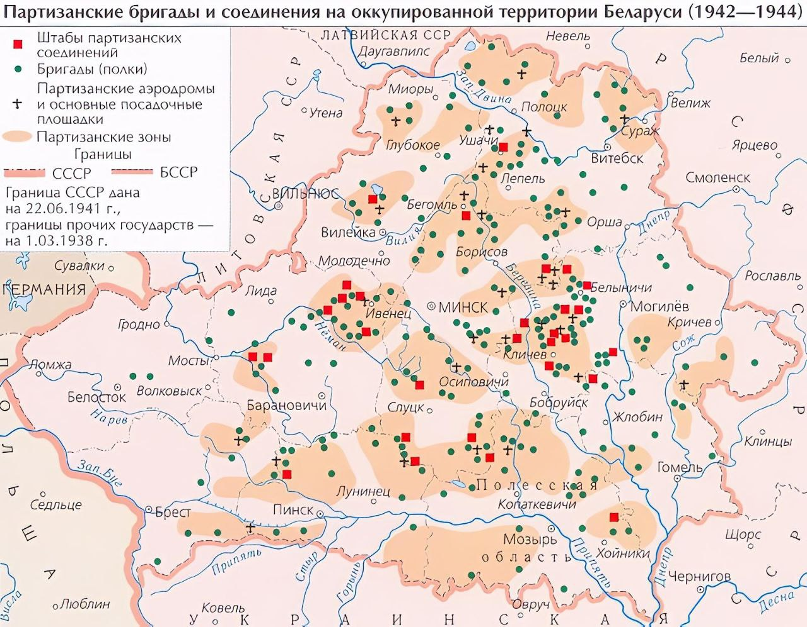
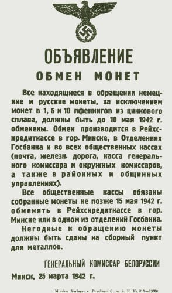
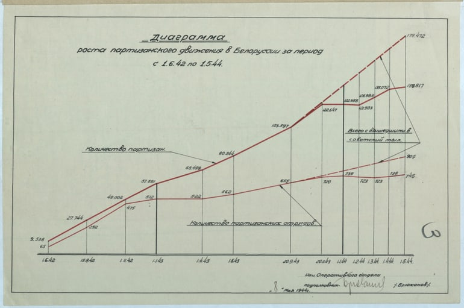

Партизанское движение в Беларуси

По мнению советских и ряда современных беларуских историков, партизанское движение на территории Беларуси имело общенародный характер. К концу 1941 года в рядах партизан сражались 12 тысяч человек в 230 отрядах. Численность белорусских народных мстителей к концу войны превышала 374 тысячи человек. Они были объединены в 1 255 отрядов, из которых 997 входили в состав 213 бригад и полков, а 258 отрядов действовали самостоятельно.
Расширению и укреплению партизанского движения в Беларуси способствовало огромное количество лесов, рек, озёр и болот. Эти географические факторы затрудняли эффективное проведение немцами карательных мер против партизан.
Содержание
- Предпосылки
- Первый этап (июнь 1941 - ноябрь 1942)
- Второй этап (ноябрь 1942 - декабрь 1943)
- Третий этап (декабрь 1943 - июль 1944)
- Цифры и значение
Предпосылки

Под оккупацией на захваченной немецко-фашистскими войсками территории Белорусской ССР оказалось около 8 миллионов гражданского населения, а также около 900 тысяч советских военнопленных.
Первым шагом оккупантов стало введение ограничений гражданских свобод местного населения. Было объявлено чрезвычайное положение. Всё население, проживающее на оккупированной территории, подлежало обязательному учёту и регистрации в местных администрациях. Запрещалось деятельность всех организаций, а также проведение митингов и собраний. Вводился пропускной режим и действовал комендантский час. С первых дней войны немцы проводили массовые чистки: убивали коммунистов, комсомольцев, активистов советской власти, представителей интеллигенции. С особой жестокостью уничтожалась «расово вредная» часть населения: евреи, цыгане, физически и психически больные люди. Нацисты часто использовали детей в качестве доноров крови. Местное население привлекалось к расчистке заминированных участков, было живым щитом в боевых операциях против партизан и войск Красной армии. Немецкой администрацией применялась депортация населения на принудительные работы в Германию, Австрию, Францию, Чехию. Таких «добровольных» работников называли остарбайтерами. Все экономические и природные ресурсы захваченных районов были объявлены немецкой собственностью. Вводилась обязательная трудовая повинность.
Все эти мероприятия, проводимые немецкой администрацией на территории Беларуси, способствовали подъёму освободительного движения. С первых дней войны белорусы начали оказывать сопротивление нацистам. После введения различных ограничений и налогов недовольство среди мирного населения нарастало в геометрической прогрессии, что позволило успешно организовать партизанское движение на территории БССР.
В целях борьбы с антигерманским сопротивлением нацистами широко использовались карательные экспедиции. Уничтожались целые районы, превращавшиеся в «зоны пустынь».
Первый этап
Начальный этап определялся стихийным сопротивлением. Первые партизанские отряды создавались из окруженцев (солдат и офицеров Красной Армии, не сумевших отступить), местных коммунистов, активистов и мирных жителей. Первый в СССР партизанский бой Великой Отечественной войны провел отряд Василия Коржа 28 июня 1941 года под Пинском. В августе 1941 года звания Героев Советского Союза первыми получили командиры отряда «Красный Октябрь» Тихон Бумажков и Фёдор Павловский.
Движение возникло в условиях господства вермахта и хаоса отступления. Партизаны испытывали острый дефицит оружия, боеприпасов, медикаментов, продовольствия и надежной связи с «Большой землей». Не было единого руководства, отряды действовали разрозненно. Зимой 1941-1942 гг. партизаны столкнулись с проблемой выживания в лесах.
Основными задачами были не столько масштабные диверсии (на что не хватало сил), сколько:
- Создание и удержание скрытых лесных лагерей (баз).
- Проведение мелких диверсий и нападений на мелкие гарнизоны.
- Ведение разведки.
- Налаживание связи с местным населением и подпольем в городах.
Немецкие оккупационные власти, стремясь подавить сопротивление, проводили масштабные карательные экспедиции (например, операцию «Бамберг» в Бобруйском районе весной 1942 года). Тысячи мирных жителей были убиты, сотни деревень сожжены. Это, однако, зачастую давало обратный эффект.
К концу 1941 года на территории Беларуси действовало уже около 430 партизанских отрядов и групп. 30 мая 1942 года при Ставке Верховного Главнокомандования был создан Центральный штаб партизанского движения (ЦШПД). На местах стали формироваться областные штабы, что положило начало системному снабжению отрядов по воздуху и координации их действий.
Второй этап


После создания в сентябре 1942 года Белорусского штаба партизанского движения (БШПД) руководство стало централизованным. Это позволило эффективно снабжать отряды с «Большой земли», направлять инструкторов и планировать масштабные операции. К концу 1943 года в республике действовало уже 199 партизанских бригад, сведённых в крупные соединения. Численность партизан выросла до сотен тысяч человек, и они контролировали около 60% оккупированной территории Беларуси, создавая обширные освобождённые партизанские зоны.
Ключевой задачей этапа стал срыв немецких военных перевозок. Апофеозом этой борьбы стала крупнейшая диверсионная операция войны — «Рельсовая война», проводившаяся в тесной координации с наступлением Красной Армии.
Рост партизанской угрозы заставил немцев проводить против них крупные карательные операции с привлечением танков, артиллерии и авиации. Партизанские соединения, такие как Пинское под командованием Василия Коржа, научились не только выдерживать эти удары, но и успешно прорываться из окружений, нанося врагу значительный урон.
Третий этап
Весной 1944 года развернулось одно из самых крупных сражений партизанской войны — оборона Полоцко-Лепельской партизанской зоны. Немцы стянули против неё около 60 тысяч солдат, включая танки и авиацию. Силы партизан в зоне насчитывали более 17 тысяч человек, но у них почти не было тяжёлого вооружения. Несмотря на огромное превосходство противника, партизаны создали оборону протяженностью 230 км и около месяца сдерживали натиск. В начале мая 1944 года они совершили героический прорыв из окружения, выведя с собой более 15 тысяч мирных жителей.
Самым эффективным вкладом партизан в успех «Багратиона» стал заключительный этап «Рельсовой войны», начавшийся в ночь на 20 июня 1944 года.
Эта операция планировалась в тесном взаимодействии с командованием Красной Армии. Партизанские соединения получили точные указания и более 50 тонн взрывчатки с «Большой земли». Синхронно произведя более 10 тысяч взрывов, партизаны в первый же день подорвали 40 775 рельсов. Железнодорожные перевозки противника на территории Беларуси были полностью парализованы на несколько дней. Немецкие войска лишились подвоза резервов и боеприпасов как раз в момент начала советского наступления.
После прорыва фронта Красной Армией партизаны активно помогали наступающим частям: захватывали переправы, участвовали в освобождении городов и сёёл. Яркой точкой, символизирующей единство фронта и тыла, стал Партизанский парад в освобождённом Минске 16 июля 1944 года.
Цифры и значение

Около 374 тысяч человек встали в ряды партизан за годы войны. Было создано 199 бригад и 1255 отрядов. Уничтожено, ранено, взято в плен около 500 тыс. солдат и офицеров. Пущено под откос 11 128 вражеских эшелонов. Взорвано 819 ж/д и 4 710 автодорожных мостов. Сокращение ж/д перевозок противника на 40%. Уничтожено 18 700 автомашин, 1 355 танков и бронемашин. 88 партизан стали Героями Советского Союза. Более 140 тыс. человек награждены орденами и медалями.
Партизаны оттянули на себя огромные силы, так что для охраны коммуникаций и карательных операций немцам пришлось держать в Беларуси свыше 200 тысяч солдат (около 10% сил группы армий «Центр»), которые не могли быть использованы на фронте. Были созданы обширные «партизанские края», где действовала советская власть, и которые подрывали контроль оккупантов и давали населению надежду.
Движение стало символом всенародного сопротивления, продемонстрировало непокорённость народа и его решимость бороться до конца, поддерживая дух тех, кто оставался на оккупированной территории.